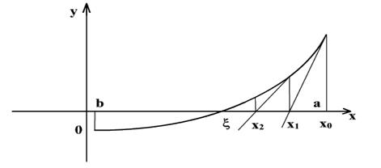

Возьмем начальное приближение \(x_0\) и проведем касательную к графику функции \(f(x)\) в этой точке. Точку пересечения касательной с осью абсцисс обозначим за \(x_1\). Далее проводим касательную к графику функции \(f(x)\) в точке \(x_1\) и точку пересечения касательной с осью абсцисс обозначим за \(x_2\). Далее процесс повторяется. Из уравнения касательной выводится формула \[x_{n+1} = x_n − \frac{f(x_n)}{f'(x_n)}.\]
Итерационный процесс заканчивается, когда \(|x_{n+1} - x_n| < \varepsilon\).
За начальное приближение \(x_0\) принимается один из концов отрезка \([a, b]\). Если на \([a, b]\) \(f''(x)\) сохраняет знак, то \[x_0 = \begin{cases} a \text{, если } f(a)\cdot f''(a) > 0\\ b \text{, если } f(b)\cdot f''(b) > 0 \end{cases}\]

Метод быстро сходится. Но его недостатком является необходимость использовать производную, а эта аналитическая работа не всегда удобна. Поэтому используют модификации метода.